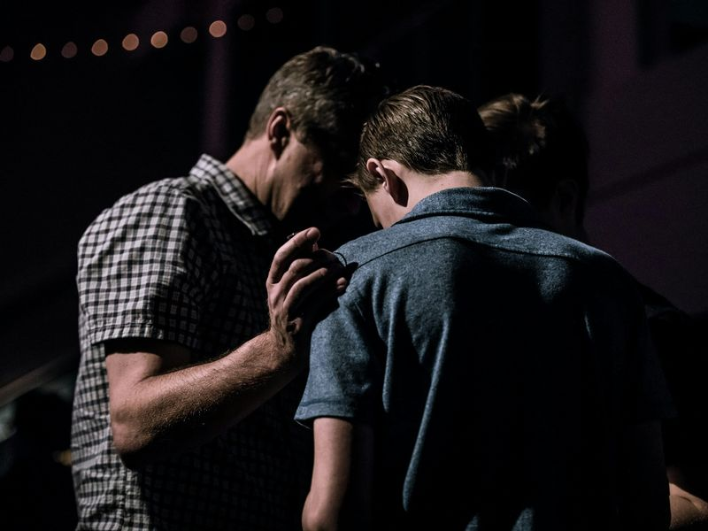

Pr. Sergio Ribeiro
Influenciador de Esperança
Cristão, marido e pai. Escrevo sobre fé, família e propósito para lembrar você de que sempre há um novo começo.
“Novas são cada manhã; grande é a tua fidelidade.”
Sobre mim
Fé em casa, esperança na rua
Sou o Sergio Ribeiro, casado com a Mônica e pai de três filhos. Tudo o que escrevo nasce aqui: da fé que vivo em casa, da mesa cheia e das conversas de todo dia.
Acredito que esperança se compartilha. Às vezes ela vem num versículo, às vezes numa palavra de apoio a um amigo. E às vezes vem num pássaro que aparece na minha janela quase todos os dias, só para lembrar que Deus cuida dos detalhes.
Se você precisa de uma palavra de ânimo, de uma oração ou só de alguém para ouvir, pode me chamar.
- Cristão
- Casado com Mônica
- Pai de três filhos
- Brasília/DF

Esperança em palavras
Uma palavra para hoje
Versículos que me sustentam e que podem sustentar você também. Leia devagar e guarde o que tocar seu coração.
-
“Ora, o Deus de esperança vos encha de todo o gozo e paz em crença, para que abundeis em esperança pela virtude do Espírito Santo.”
Romanos 15.13 · ARC A esperança não depende só de você. Ela vem de Deus e transborda.
-
“Porque eu bem sei os pensamentos que penso de vós, diz o Senhor; pensamentos de paz e não de mal, para vos dar o fim que esperais.”
Jeremias 29.11 · ARC Mesmo quando o caminho parece incerto, os planos de Deus para você são de paz.
-
“…temos como âncora da alma segura e firme…”
Hebreus 6.19 · ARC A esperança é a âncora que mantém você firme quando o mar fica agitado.
-
“Mas os que esperam no Senhor renovarão as suas forças e subirão com asas como águias; correrão e não se cansarão; caminharão e não se fatigarão.”
Isaías 40.31 · ARC Cansou? Esperar no Senhor é recuperar o fôlego para seguir em frente.

AD Catedral BaleiaAsa Sul, Brasília/DF
Ministério
Homens que caminham juntos
Faço parte do ministério de homens da AD Catedral Baleia, em Brasília.
Ali aprendemos que nenhum homem precisa carregar o peso sozinho. Nos encontramos para orar, conversar com franqueza e fortalecer a fé, a família e a amizade.
-
Encontros
Momentos para estudar a Palavra, ouvir e ser ouvido.
-
Confraternização
Mesa farta e boas conversas que viram amizades.
-
Oração
Um cuidando do outro, nas lutas e nas vitórias.
As próximas datas são divulgadas no Instagram.
Tecnologia
Fé e tecnologia no mesmo propósito
O portfólio fala por você.
Também trabalho com tecnologia, e levo para essa área o que aprendi na fé: servir bem, ser verdadeiro e compartilhar o que sei. Para quem está começando, meu conselho é simples. Mostre o que você faz, porque um bom portfólio abre portas que o currículo sozinho não abre.
Áreas de atuação
- Áreas de atuação em breve
LinkedIn e portfólio em breve.
Pontes e comunidades
Amizade que atravessa fronteiras
Brasília reúne gente de muitos lugares, e isso me encanta. Com a Mônica, tenho a alegria de participar de celebrações de outras comunidades a convite de amigos queridos. Cada encontro me lembra que respeito, escuta e hospitalidade constroem pontes entre os povos, e que a esperança fala todas as línguas.
- Respeito
- Escuta
- Hospitalidade
No dia a dia
@pr.sergioribeiro
Versículos, família, os encontros do ministério e pequenas alegrias do cotidiano. Acompanhe por lá.
Contato
Vamos conversar?
Quer uma palavra de ânimo, um pedido de oração ou falar sobre o ministério ou tecnologia? Me chame no WhatsApp. Eu leio cada mensagem e respondo assim que puder.
-
WhatsApp
(61) 90000-0000
Respondo assim que puder.
Fale comigo -
E-mail
contato@exemplo.com
Para convites e assuntos com mais detalhes.
Enviar e-mail -
Instagram
@pr.sergioribeiro
Mensagens e novidades do dia a dia.
Abrir perfil
Brasília/DF